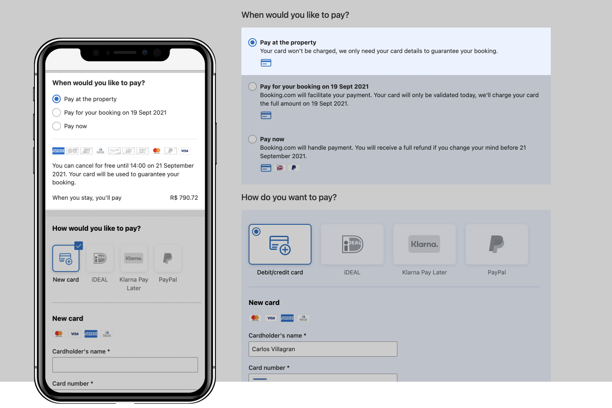
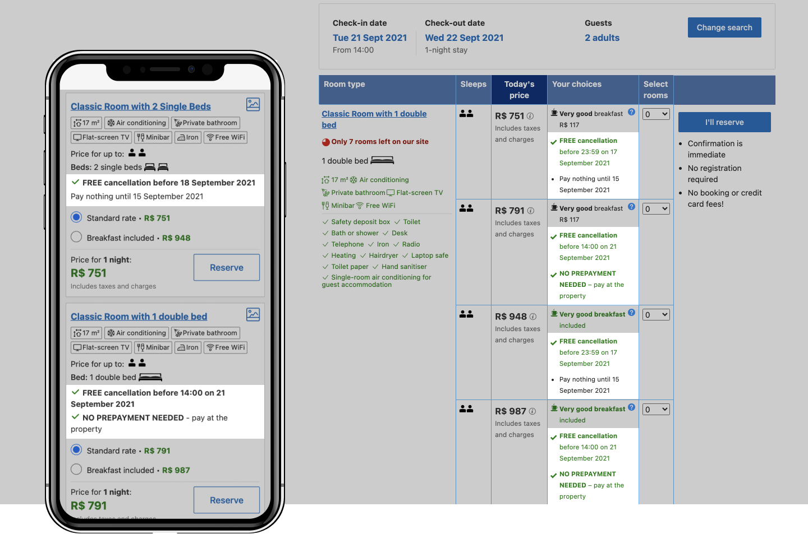
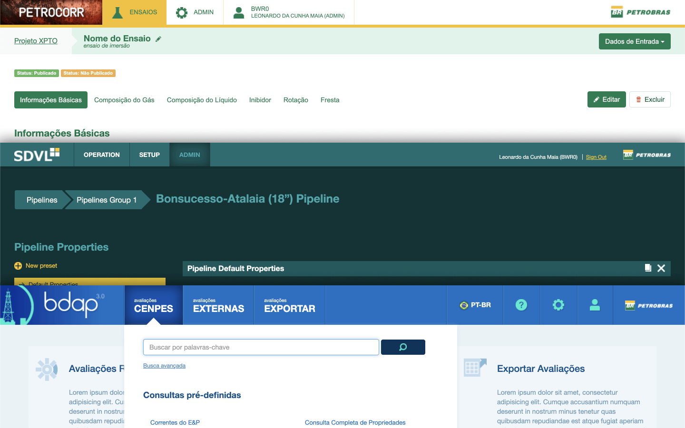

My process tends to be very informal but comprises of an iterative approach using varied methods as needed. It may start out as simple as writing a doc with basic requirements up until implementing designs for production and validating them. In between I make use of different techniques to map out the user flows, explore and refine solutions using low to high fidelity mock-ups, plan and participate on user research, implement, run AB tests and analyse their results.
Booking.com
Pay at the Property (2020 – 2021)

A new approach allowing guests to pay for their reservations when they stay whilst giving them and the accommodations more protection.
What I've done
Journey flows for partners to potentially opt into the new product and manage reservations within the new flow.
Low to high fidelity mock-ups on different stages incorporating feedback from key stakeholders across the business.
Planned research iniative in collaboration with User Researcher.
Conducted multiple partner interviews.
Transactional Policies (2019 – 2021)

A complete overhaul on the company's cancellation policies for both guests and accommodations.
What I've done
Low fidelity visualisation of a high complexity and high uncertainty project for both the policies simplication set-up for accommodations as well full flows on all main policies + payment timing scenarios.
Sought out alignment with multiple parties and stakeholders across the business and iterated on those mock-ups whilst raising visibility of the project across the organisation.
Flagged potential conflicts with other products and issues early on so we could adapt quickly and discuss with relevant stakeholders a plan of action.
Partner performance tools: Opportunity Center and Analytics (2014 – 2016)
A business recommendations hub and a analytics reporting dashboard for accommodations.
What I've done
Gathered requirements and worked close with the PM to refine the problem statement and the projects' value propositions through an iterative process using low fidelity mock-ups.
Participated in multiple user research debrief sessions in which we discussed key findings and next steps, problems we should focus on and how iterate on the product.
Refined designs to a higher fidelity level to get closer to what the real thing should look like and gather further feedback from our potential users.
Implemented the whole product's design for production (html + css) in collaboration with my team's front-end developer.
Launched the product and kept learning from users behavior and optimising it using AB experimentation and beta programs.
Petrobras
Several projects (2011 – 2014)

One of the biggest brazilian companies operating in the oil industry. I used to work in its R&D IT department in which I designed several scientific applications of high complexity to be used for refinery work.
What I've done
Loads of low to high fidelity wireframes and prototypes to propose solutions for highly complex problems and user interactions to make it easier for scientists and engineers using digital applications.
Conducting end user interviews and having a close collaboration with them to refine the understanding of their problems and iterating on the solutions together.
Visual design and markup implementation mostly using Bootstrap.